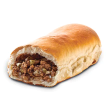

Runza Recipe
Home

Delicious Home Made Runzas!
Home made runzas are the ultimate comfort food. It is a soft warm sandwich pocket stuffed with anything that you would like.
My wife and I like to stuff them with hamburger meat and cabbage. You can omit the cabbage if you do not like it.
Ingredients
- Rhodes Rolls
- Hamburger Meat
- Raw Cabbage
- Garlic Salt
- Melted Butter
Steps
- Set out Rhodes Rolls to rise(do not let them rise too much)
- After rolls have risen, brown hamburger meat and drain
- Cut up cabbage into tiny pieces and add to hamburger meat. Cook until cabbage is soft
- Mix 1 Table Spoon of garlic salt.
- Flatten 1 roll and add a spoonfull of meat/cabbage mixture to center. Add another flattened roll on top and pinch all around the eddges.
- Preheat oven to 350 degrees and cook rolls for 15 minutes.
- Once runza has cooled down for about 5 minutes, rub melted butter on the top.
- Serve and enjoy!